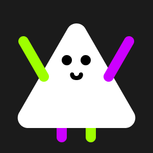
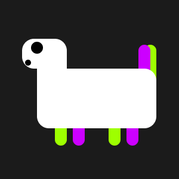

George Salt
Squad
Squad
Начало
Древнейшие существа
George Salt Squad - постоянное событие про эволюционное развитие живых существ, их племен > кланов > поселений > царств > стран > держав > макро > соединенного мира, в котором вы тоже можете принять участие и перевернуть сюжет в любую минуту!
Ждите новостей события каждую среду!
Действие события происходит в том же мире, из которого ТЫ сейчас читаешь эту историю, но только на другой планете и в другой галактике, а именно на планете Менол (или Менолин) в галактике Аустроба.
Существа, речь о которых пойдет в событии, живут как раз на этой планете и по поведению очень похожи на людей, но выглядят как треугольники. У них тоже есть руки, ноги, а голова и туловище составляют единое целое.
До зарождения жизни в виде треугольников, о которых рассказывалось ранее, на планете Менол проживали очень странные создания, похожие на земных динозавров.
Продолжалось это, пока летящая мимо комета не врезалась в спутник Менола. Спутник разорвался на куски, а один из расколовшихся кусочков прилетел прямо в Мелон. В тот момент, врезавшийся кусок расколол единую землю на несколько материков. Прошлая жизнь закончилась, наступила Эра треугольников!
Выберите, что, по вашему мнению, может произойти.
Ваш ответ может повлиять на развитие дальнейших событий! Ждите новостей каждую среду!
Спасибо за участие в опросе! Ждите новостей каждую среду!